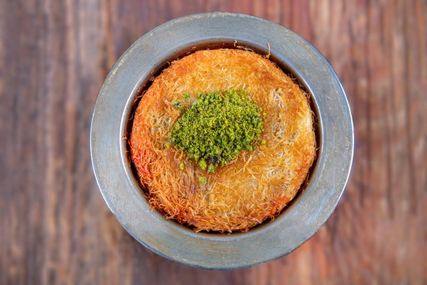

Apricot delight is made with puree of apricots that have been soaked overnight in water. The soaked apricots are cooked with sugar and spread between slices of sponge cake.
What does Kunafa taste like? Also called Kanafeh, a middle-eastern dessert that is very sweet, usually due to the sugar/honey water that is poured over the semolina fine “noodles” with a special ricotta cheese that is melted and binds the noodles to become a kind of a sweet omelet pie, fried on a pan
